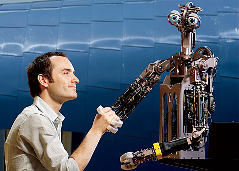

As I see it, I still live in the 20th century. History will remember the 21st century as the time when man entered a new Renaissance, and when this was not just a photo shoot.

If we could replace journalists with robots, the issue of media bias would disappear, and they would become better looking.
Even in our still-primitive world of today, I would rather be making $30,000 a year than be promised $100 million dollars if I walked through a door back into 1986, and I say that not just because of the big hair. The Internet was still seven years away from its first web page in 1986. We might not be able to go back in time, but in general we wouldn't want to.
Many people don't appreciate how much faster the world is moving every day with the creation of the Internet and other modern technologies. Some say: “The only constant is change”, but this is wrong: the only constant is acceleration, an increasing rate of change. People don't feel the acceleration yet because the world is moving so slowly. Energy prices are high because we haven't built a nuclear power plant in 30 years (blame the Democrats), and building nuclear power plants supposedly takes 15 years (blame the bureaucrats). It took decades to roll out HDTV. Genetically modified foods are treated as Frankensteins of nature. Drug companies hire as many lawyers as researchers, and then we wonder why drug costs are so high, and why it takes years to release new ones. Devices are disintegrated and stupid. Waiting in line is considered a normal part of life.
The gap between the rich and the poor doesn't cause social instability because Bill Gates doesn't live materially better than anyone else. His contact lenses are no better than mine, and neither of us owns a robot-driven car.
With better cooperation and better tools, the 21st century Renaissance is waiting for us. The world there will be characterized by a gift economy, so resist the urge to hoard. Once we cross that line, we will get our sanity and happiness back. Let's hurry!
Do not fear the future; man was created to solve problems and gain enjoyment from that process. The question as to whether the United States will be relevant in the 21st century depends on the responses to these simple questions: will it have the most scientists, and are they learning from each other, and therefore working together?
The End